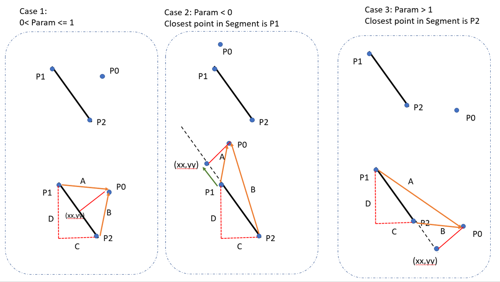

Shortest distance between a point and a line segment
I need a basic function to find the shortest distance between a point and a line segment. Feel free to write the solution in any language you want; I can translate it into what I'm using (Javascript).
EDIT: My line segment is defined by two endpoints. So my line segment AB is
defined by the two points A (x1,y1) and B (x2,y2). I'm trying to find the
distance between this line segment and a point C (x3,y3). My geometry skills
are rusty, so the examples I've seen are confusing, I'm sorry to admit.
Answer
Eli, the code you've settled on is incorrect. A point near the line on which
the segment lies but far off one end of the segment would be incorrectly
judged near the segment. Update: The incorrect answer mentioned is no
longer the accepted one.
Here's some correct code, in C++. It presumes a class 2D-vector class vec2
{float x,y;}, essentially, with operators to add, subract, scale, etc, and a
distance and dot product function (i.e. x1 x2 + y1 y2).
float minimum_distance(vec2 v, vec2 w, vec2 p) { // Return minimum distance between line segment vw and point p const float l2 = length_squared(v, w); // i.e. |w-v|^2 - avoid a sqrt if (l2 == 0.0) return distance(p, v); // v == w case // Consider the line extending the segment, parameterized as v + t (w - v). // We find projection of point p onto the line. // It falls where t = [(p-v) . (w-v)] / |w-v|^2 // We clamp t from [0,1] to handle points outside the segment vw. const float t = max(0, min(1, dot(p - v, w - v) / l2)); const vec2 projection = v + t * (w - v); // Projection falls on the segment return distance(p, projection); }
EDIT: I needed a Javascript implementation, so here it is, with no
dependencies (or comments, but it's a direct port of the above). Points are
represented as objects with x and y attributes.
function sqr(x) { return x * x } function dist2(v, w) { return sqr(v.x - w.x) + sqr(v.y - w.y) } function distToSegmentSquared(p, v, w) { var l2 = dist2(v, w); if (l2 == 0) return dist2(p, v); var t = ((p.x - v.x) * (w.x - v.x) + (p.y - v.y) * (w.y - v.y)) / l2; t = Math.max(0, Math.min(1, t)); return dist2(p, { x: v.x + t * (w.x - v.x), y: v.y + t * (w.y - v.y) }); } function distToSegment(p, v, w) { return Math.sqrt(distToSegmentSquared(p, v, w)); }
EDIT 2: I needed a Java version, but more important, I needed it in 3d instead of 2d.
float dist_to_segment_squared(float px, float py, float pz, float lx1, float ly1, float lz1, float lx2, float ly2, float lz2) { float line_dist = dist_sq(lx1, ly1, lz1, lx2, ly2, lz2); if (line_dist == 0) return dist_sq(px, py, pz, lx1, ly1, lz1); float t = ((px - lx1) * (lx2 - lx1) + (py - ly1) * (ly2 - ly1) + (pz - lz1) * (lz2 - lz1)) / line_dist; t = constrain(t, 0, 1); return dist_sq(px, py, pz, lx1 + t * (lx2 - lx1), ly1 + t * (ly2 - ly1), lz1 + t * (lz2 - lz1)); }
Here, in the function parameters, <px,py,pz> is the point in question and
the line segment has the endpoints <lx1,ly1,lz1> and <lx2,ly2,lz2>. The
function dist_sq (which is assumed to exist) finds the square of the
distance between two points.
Suggest
Here is the simplest complete code in Javascript.
x, y is your target point and x1, y1 to x2, y2 is your line segment.
UPDATED: fix for 0 length line problem from comments.
function pDistance(x, y, x1, y1, x2, y2) { var A = x - x1; var B = y - y1; var C = x2 - x1; var D = y2 - y1; var dot = A * C + B * D; var len_sq = C * C + D * D; var param = -1; if (len_sq != 0) //in case of 0 length line param = dot / len_sq; var xx, yy; if (param < 0) { xx = x1; yy = y1; } else if (param > 1) { xx = x2; yy = y2; } else { xx = x1 + param * C; yy = y1 + param * D; } var dx = x - xx; var dy = y - yy; return Math.sqrt(dx * dx + dy * dy); }

UPDATED: Kotlin version
fun getDistance(x: Double, y: Double, x1: Double, y1: Double, x2: Double, y2: Double): Double { val a = x - x1 val b = y - y1 val c = x2 - x1 val d = y2 - y1 val lenSq = c * c + d * d val param = if (lenSq != .0) { //in case of 0 length line val dot = a * c + b * d dot / lenSq } else { -1.0 } val (xx, yy) = when { param < 0 -> x1 to y1 param > 1 -> x2 to y2 else -> x1 + param * c to y1 + param * d } val dx = x - xx val dy = y - yy return hypot(dx, dy) }